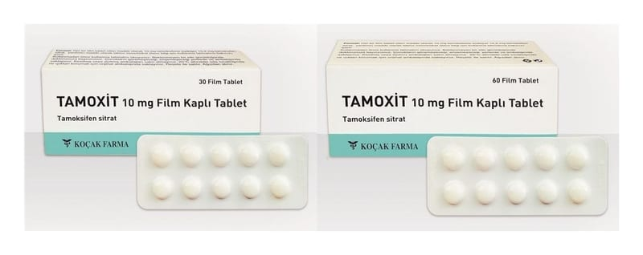

Tamoxit 10 mg Film Kaplı Tablet (Tamofen), 30 Tablet

Ne için kullanılır
KT · Bölüm 1Beyaz renkli, yuvarlak, bikonveks film tablettir. TAMOXİT; 30, 60, 100 ve 250film tabletiçeren ambalajlardasunulmaktadır. TAMOXİT’te yardımcı madde olarak kullanılan laktoz monohidratvejelatinsığır kaynaklıdır. TAMOXİTanti–östrojenler denenilaç sınıfına ait bir ilaçtır.
Meme kanseri tedavisinde kullanılır.